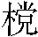
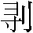

第十七回 花和尚单打二龙山 青面兽双夺宝珠寺
诗曰：
二龙山势耸云烟，松桧森森翠接天。
乳虎邓龙真啸聚，恶神杨志更雕镌。
人逢忠义情偏洽，事到颠危志益坚。
背绣僧同青面兽，宝珠夺得更周全。
话说杨志当时在黄泥冈上被取了生辰纲去，如何回转去见得梁中书，欲要就冈子上自寻死路。却待望黄泥冈下跃身一跳，猛可醒悟，拽住了脚，寻思道：”爹娘生下洒家，堂堂一表，凛凛一躯，自小学成十八般武艺在身，终不成只这般休了！比及今日寻个死处，不如日后等他拿得着时，却再理会。”回身再看那十四个人时，只是眼睁睁地看着杨志，没个挣扎得起。杨志指着骂道：”都是你这厮们不听我言语，因此做将出来，连累了洒家！”树根头拿了朴刀，挂了腰刀，周围看时，别无物件，杨志叹了口气，一直下冈子去了。
那十四个人直到二更方才得醒，一个个爬将起来，口里只叫得连珠箭的苦。老都管道：”你们众人不听杨提辖的好言语，今日送1了我也！”众人道：”老爷，今日事已做出来了，且通个商量。”老都管道：”你们有甚见识？”众人道：”是我们不是了。古人有言：火烧到身，各自去扫；蜂虿入怀，随即解衣。若还杨提辖在这里，我们都说不过。如今他自去的不知去向，我们回去见梁中书相公，何不都推在他身上。只说道：他一路上凌辱打骂众人，逼迫的我们都动不得。他和强人做一路，把蒙汗药将俺们麻翻了，缚了手脚，将金宝都掳去了。”老都管道：”这话也说的是。我们等天明先去本处官司首告，留下两个虞候随衙听候，捉拿贼人。我等众人连夜赶回北京，报与本官知道，教动文书，申复太师得知，着落济州府追获这伙强人便了。”次日天晓，老都管自和一行人来济州府该管官吏首告，不在话下。
且说杨志提着朴刀，闷闷不已，离黄泥冈望南行了半日，看看又走了半夜，去林子里歇了。寻思道：”盘缠又没了，举眼无个相识，却是怎地好！”渐渐天色明亮，只得赶早凉了行。又走了二十馀里，前面到一酒店门前。杨志道：”若不得些酒吃，怎地打熬得过。”便入那酒店去，向这桑木桌凳座头上坐了，身边倚了朴刀。只见灶边一个妇人问道：”客官莫不要打火？”杨志道：”先取两角酒来吃，借些米来做饭，有肉安排些个。少停一发算钱还你。”只见那妇人先叫一个后生来面前筛酒，一面做饭，一边炒肉，都把来杨志吃了。杨志起身，绰了朴刀便出店门。那妇人道：”你的酒肉饭钱都不曾有。”杨志道：”待俺回来还你，权赊咱一赊。”说了便走。那筛酒的后生，赶将出来揪住，被杨志一拳打翻了。那妇人叫起屈来。杨志只顾走，只见背后一个人赶来叫道：”你那厮走那里去？”杨志回头看时，那人大脱膊着，拖条杆棒枪奔将来。杨志道：”这厮却不是晦气，倒来寻洒家。”立脚住了不走。看后面时，那筛酒后生也拿条

叉，随后赶来。又引着两三个庄客，各拿杆棒，飞也似都来。杨志道：”结果了这厮一个，那厮们都不敢追来。”便挺了手中朴刀，来斗这汉。这汉也轮转手中杆棒枪来迎。两个斗了三二十合，这汉怎地敌的杨志，只办得架隔遮拦，上下躲闪。那后来的后生并庄客却待一发上，只见这汉托地跳出圈子外来，叫道：”且都不要动手！兀那使朴刀的大汉，你可通个姓名。”正是：逃灾避难受辛艰，曹正相逢且破颜。
偶遇智深同戮力，三人计夺二龙山。
那杨志拍着胸道：”洒家行不更名，坐不改姓，青面兽杨志的便是。”这汉道：”莫不是东京殿司杨制使么？”杨志道：”你怎地知道洒家是杨制使？”这汉撇了枪棒便拜道：”小人有眼不识泰山。”杨志便扶这人起来，问道：”足下是谁？”这汉道：”小人原是开封府人氏，乃是八十万禁军都教头林冲的徒弟，姓曹名正，祖代屠户出身。小人杀得好牲口，挑筋剐骨，开剥推

，只此被人唤做操刀鬼曹正。为因本处一个财主，将五千贯钱教小人来此山东做客，不想折本，回乡不得，在此入赘在这个庄农人家。却才灶边妇人，便是小人的浑家。这个拿叉的，便是小人的妻舅。却才小人和制使交手，见制使手段和小人师父林教师一般，因此抵敌不住。”杨志道：”原来你却是林教师的徒弟。你的师父被高太尉陷害，落草去了，如今见在梁山泊。”曹正道：”小人也听得人这般说将来，未知真实。且请制使到家少歇。”杨志便同曹正再回到酒店里来。曹正请杨志里面坐下，叫老婆和妻舅都来拜了杨志，一面再置酒食相待。饮酒中间，曹正动问道：”制使缘何到此？”杨志把做制使失陷花石纲，并如今又失陷了梁中书的生辰纲一事，从头备细告诉了。曹正道：”既然如此，制使且在小人家里住几时，再有商议。”杨志道：”如此，却是深感你的厚意。只恐官司追捕将来，不敢久住。”曹正道：”制使这般说时，要投那里去？”杨志道：”洒家欲投梁山泊去，寻你师父林教头。俺先前在那里经过时，正撞着他下山来与洒家交手。王伦见了俺两个本事一般，因此都留在山寨里相会，以此认得你师父林冲。王伦当初苦苦相留洒家，俺却不肯落草。如今脸上又添了金印，却去投奔他时，好没志气。因此踌躇未决，进退两难。”曹正道：”制使见的是。小人也听的人传说，王伦那厮心地匾窄，安不得人；说我师父林教头上山时，受尽他的气。以此多人传说将来，方才知道。不若小人此间，离不远却是青州地面，有座山唤做二龙山，山上有座寺，唤做宝珠寺。那座山生来却好裹着这座寺，只有一条路上的去。如今寺里住持还了俗，养了头发，馀者和尚，都随顺了。说道他聚集的四五百人，打家劫舍。为头那人，唤做金眼虎邓龙。制使若有心落草时，到去那里入伙，足可安身。”杨志道：”既有这个去处，何不去夺来安身立命。”当下就曹正家里住了一宿，借了些盘缠，拿了朴刀，相别曹正，拽开脚步，投二龙山来。
行了一日，看看渐晚，却早望见一座高山。杨志道：”俺去林子里且歇一夜，明日却上山去。”转入林子里来，吃了一惊。只见一个胖大和尚，脱的赤条条的，背上刺着花绣，坐在松树根头乘凉。那和尚见了杨志，就树根头绰了禅杖，跳将起来，大喝道：”兀那撮鸟，你是那里来的？”杨志听了道：”原来也是关西和尚。俺和他是乡中2，问他一声。”杨志叫道：”你是那里来的僧人？”那和尚也不回说，轮起手中禅杖，只顾打来。杨志道：”怎奈那秃厮无礼，且把他来出口气。”挺起手中朴刀来奔那和尚。两个就林子里一来一往，一上一下，两个放对3。但见：
两条龙竞宝，一对虎争餐。朴刀举露半截金蛇，禅杖起飞全身玉蟒。两条龙竞宝，搅长江，翻大海，鱼鳖惊惶；一对虎争餐，奔翠岭，撼青林，豺狼乱窜。崒嵂嵂，忽喇喇，天崩地塌，黑云中玉爪盘旋；恶狠狠，雄赳赳，雷吼风呼，杀气内金睛闪烁。两条龙竞宝，吓的那身长力壮、仗霜锋周处眼无光；一对虎争餐，惊的这胆大心粗、施雪刃卞庄魂魄丧。两条龙竞宝，眼珠放彩，尾摆得水母殿台摇；一对虎争餐，野兽奔驰，声震的山神毛发竖。花和尚不饶杨制使，抵死交锋；杨制使欲捉花和尚，设机力战。
当时杨志和那僧人斗到四五十合，不分胜败。那和尚卖个破绽，托地跳出圈子外来，喝一声：”且歇！”两个都住了手。杨志暗暗地喝彩道：”那里来的这个和尚，真个好本事，手段高，俺却刚刚地只敌的他住。”那僧人叫道：”兀那青面汉子，你是甚么人？”杨志道：”洒家是东京制使杨志的便是。”那和尚道：”你不是在东京卖刀杀了破落户牛二的？”杨志道：”你不见俺脸上金印？”那和尚笑道：”却原来在这里相见。”杨志道：”不敢问师兄却是谁？缘何知道洒家卖刀？”那和尚道：”洒家不是别人，俺是延安府老种经略相公帐前军官鲁提辖的便是。为因三拳打死了镇关西，却去五台山净发为僧。人见洒家背上有花绣，都叫俺做花和尚鲁智深。”杨志笑道：”原来是自家乡里。俺在江湖上多闻师兄大名，听的说道师兄在大相国寺里挂搭，如今何故来在这里？”鲁智深道：”一言难尽。洒家在大相国寺管菜园，遇着那豹子头林冲被高太尉要陷害他性命。俺却路见不平，直送他到沧州，救了他一命。不想那两个防送公人回来对高俅那厮说道：’正要在野猪林里结果林冲，却被大相国寺鲁智深救了。那和尚直送到沧州，因此害他不得。’这日娘贼恨杀洒家，分付寺里长老不许俺挂搭，又差人来捉洒家。却得一伙泼皮通报，不是着了那厮的手。吃俺一把火烧了那菜园里廨宇，逃走在江湖上，东又不着，西又不着。来到孟州十字坡过，险些儿被个酒店里妇人害了性命，把洒家着蒙汗药麻翻了。得他的丈夫归来的早，见了洒家这般模样，又看了俺的禅杖、戒刀吃惊，连忙把解药救俺醒来。因问起洒家名字，留住俺过了数日，结义洒家做了弟兄。那人夫妻两个，亦是江湖上好汉，有名的，都叫他做菜园子张青，其妻母夜叉孙二娘，甚是好义气。住了四五日，打听的这里二龙山宝珠寺可以安身，洒家特地来奔他邓龙入伙，叵耐那厮不肯安着洒家在这山上。邓龙那厮和俺厮并，又敌洒家不过，只把这山下三座关牢牢地拴住，又没个道路上去。打紧4这座山生的险峻，又没别路上去，那撮鸟由你叫骂，只是不下来厮杀，气得洒家正苦，在这里没个委结5。不想却是大哥来。”
杨志大喜。两个就林子里剪拂了，就地坐了一夜。杨志诉说卖刀杀死了牛二的事，并解生辰纲失陷一节，都备细说了。又说曹正指点来此一事，便道：”既是闭了关隘，俺们休在这里，如何得他下来？不若且去曹正家商议。”两个厮赶着行，离了那林子，来到曹正酒店里。杨志引鲁智深与他相见了，曹正慌忙置酒相待，商量要打二龙山一事。曹正道：”若是端的闭了关时，休说道你二位，便有一万军马也上去不得。似此只可智取，不可力求。”鲁智深道：”叵耐那撮鸟，连输与洒家两遍。那厮小肚上被俺一脚点翻了，却待再要打那厮一顿，结果了他性命，被他那里人多，救了上山去，闭了这鸟关。由你自在下面骂，只是不肯下来厮杀。”杨志道：”既然好去处，俺和你如何不用心去打？”鲁智深道：”便是没做个道理上去，奈何不得他。”曹正道：”小人有条计策，不知中二位意也不中？”杨志道：”愿闻良策则个6。”曹正道：”制使也休这般打扮，只照依小人这里近村庄家穿着。小人把这位师父禅杖、戒刀都拿了，却叫小人的妻弟带六个火家，直送到那山下，把一条索子绑了师父，小人自会做活结头。却去山下叫道：’我们近村开酒店庄家。这和尚来我店中吃酒，吃得大醉了，不肯还钱，口里说道：去报人来打你山寨。因此我们听的，乘他醉了，把他绑缚在这里，献与大王。’那厮必然放我们上山去。到得他山寨里面，见邓龙时，把索子拽脱了活结头，小人便递过禅杖与师父。你两个好汉一发上，那厮走往那里去！若结果了他时，以下的人不敢不伏。此计若何？”鲁智深、杨志齐道：”妙哉，妙哉！”
当晚吃了酒食，又安排了些路上干粮。次日五更起来，众人都吃得饱了。鲁智深的行李包裹，都寄放在曹正家。当日杨志、鲁智深、曹正，带了小舅并五七个庄家，取路投二龙山来。晌午后，直到林子里，脱了衣裳，把鲁智深用活结头使索子绑了，教两个庄家牢牢地牵着索头。杨志戴了遮日头凉笠儿，身穿破布衫，手里倒提着朴刀。曹正拿着他的禅杖，众人都提着棍棒，在前后簇拥着。到得山下，看那关时，都摆着强弩硬弓，灰瓶炮石。小喽啰在关上看时，绑得这个和尚来，飞也似报上山去。
多样时，只见两个小头目上关来问道：”你等何处人？来我这里做甚么？那里捉得这个和尚来？”曹正答道：”小人等是这山下近村庄家，开着一个小酒店。这个胖和尚不时来我店中吃酒，吃得大醉，不肯还钱，口里说道：’要去梁山泊叫千百个人来打这二龙山，和你这近村坊都洗荡了。’因此小人只得又将好酒请他，灌得醉了，一条索子绑缚这厮，来献与大王，表我等村坊孝顺之心，免得村中后患。”两个小头目听了这话，欢天喜地说道：”好了！众人在此少待一时。”两个小头目就上山来，报知邓龙，说拿的那胖和尚来。邓龙听了大喜，叫：”解上山来！且取这厮的心肝来做下酒，消我这点冤仇之恨。”小喽啰得令，来把关隘门开了，便叫送上来。杨志、曹正紧押鲁智深，解上山来。看那三座关时，端的险峻：两下里山环绕将来，包住这座寺。山峰生得雄壮，中间只一条路。上关来，三重关上，摆着擂木炮石，硬弩强弓，苦竹枪密密地攒着。过得三处关闸，来到宝珠寺前看时，三座殿门，一段镜面也似平地，周遭都是木栅为城。寺前山门下立着七八个小喽啰，看见缚的鲁智深来，都指着骂道：”你这秃驴伤了大王，今日也吃拿了。慢慢的碎割了这厮！”鲁智深只不做声。押到佛殿看时，殿上都把佛来抬去了，中间放着一把虎皮交椅，众多小喽啰拿着枪棒，立在两边。
少刻，只见两个小喽啰扶出邓龙来，坐在交椅上。曹正、杨志紧紧地帮7着鲁智深到阶下。邓龙道：”你那厮秃驴！前日点翻了我，伤了小腹，至今青肿未消。今日也有见我的时节。”鲁智深睁圆怪眼，大喝一声：”撮鸟休走！”两个庄家把索头只一拽，拽脱了活结头，散开索子。鲁智深就曹正手里接过禅杖，云飞轮动。杨志撇了凉笠儿，提起手中朴刀，曹正又轮起杆棒，众庄家一齐发作，并力向前。邓龙急待挣扎时，早被鲁智深一禅杖当头打着，把脑盖劈做两半个，和交椅都打碎了。手下的小喽啰，早被杨志搠翻了四五个。
曹正叫道：”都来投降！若不从者，便行扫除处死！”寺前寺后五六百小喽啰，并几个小头目，惊吓的呆了，只得都来归降投伏。随即叫把邓龙等尸首扛抬去后山烧化了。一面去点仓敖，整顿房舍，再去看那寺后有多少物件，且把酒肉安排些来吃。鲁智深并杨志做了山寨之主，置酒设宴庆贺。小喽啰们尽皆投伏了，仍设小头目管领。曹正别了二位好汉，领了庄家自回家去，不在话下。看官听说，有诗为证：
古刹清幽隐翠微，邓龙雄据恣非为。
天生神力花和尚，斩草除根更可悲。
不说鲁智深、杨志自在二龙山落草，却说那押生辰纲老都管，并这几个厢禁军，晓行夜住，赶回北京。到的梁中书府，直至厅前，齐齐都拜翻在地下告罪。梁中书道：”你们路上辛苦，多亏了你众人。”又问：”杨提辖何在？”众人告道：”不可说！这人是个大胆忘恩的贼。自离了此间，五七日后，行得到黄泥冈，天气大热，都在林子里歇凉。不想杨志和七个贼人通同，假装做贩枣子客商。杨志约会与他做一路，先推七辆江州车儿在这黄泥冈上松林里等候，却叫一个汉子挑一担酒来冈子上歇下。小的众人不合买他酒吃，被那厮把蒙汗药都麻翻了，又将索子捆缚众人。杨志和那七个贼人，却把生辰纲财宝并行李尽装载车上将了去。见今去本管济州府陈告了，留两个虞候在那里随衙听候，捉拿贼人。小人等众人，星夜赶回来，告知恩相。”梁中书听了大惊，骂道：”这贼配军！你是犯罪的囚徒，我一力抬举你成人，怎敢做这等不仁忘恩的事！我若拿住他时，碎尸万段！”随即便唤书史写了文书，当时差人星夜来济州投下；又写一封家书，着人也连夜上东京报与太师知道。
且不说差人去济州下公文，只说着人上东京来到太师府报知，见了太师，呈上书札。蔡太师看了大惊道：”这班贼人甚是胆大！去年将我女婿送来的礼物打劫了去，至今未获贼人。今年又来无礼，更待干罢，恐后难治。”随即押了一纸公文，着一个府干亲自赍了，星夜望济州来，着落府尹，立等捉拿这伙贼人，便要回报。
且说济州府尹自从受了北京大名府留守司梁中书札付，每日理论不下。正忧闷间，只见门吏报道：”东京太师府里差府干见到厅前，有紧急公文要见相公。”府尹听的大惊道：”多管是生辰纲的事。”慌忙升厅来，与府干相见了，说道：”这件事下官已受了梁府虞候的状子，已经差缉捕的人跟捉贼人，未见踪迹。前日留守司又差人行札付到来，又经着仰尉司并缉捕观察，杖限跟捉，未曾得获。若有些动静消息，下官亲到相府回话。”府干道：”小人是太师府里心腹人。今奉太师钧旨，特差来这里要这一干人。临行时，太师亲自分付，教小人到本府，只就州衙里宿歇，立等相公要拿这七个贩枣子的并卖酒一人、在逃军官杨志各贼正身，限在十日捉拿完备，差人解赴东京。若十日不获得这件公事时，怕不先来请相公去沙门岛8走一遭，小人也难回太师府里去，性命亦不知如何。相公不信，请看太师府里行来的钧帖。”
府尹看罢大惊，随即便唤缉捕人等。只见阶下一人声喏，立在帘前。太守道：”你是甚人？”那人禀道：”小人是三都缉捕使臣何涛。”太守道：”前日黄泥冈上打劫了去的生辰纲，是你该管么？”何涛答道：”禀复相公，何涛自从领了这件公事，昼夜无眠，差下本管眼明手快的公人去黄泥冈上往来缉捕。虽是累经杖责，到今未见踪迹。非是何涛怠慢官府，实出于无奈。”府尹喝道：”胡说！上不紧则下慢。我自进士出身，历任到这一郡诸侯，非同容易。今日东京太师府差一干办来到这里，领太师台旨，限十日内须要捕获各贼正身完备解京。若还违了限次，我非止罢官，必陷我投沙门岛走一遭。你是个缉捕使臣，倒不用心，以致祸及于我。先把你这厮迭配远恶军州雁飞不到去处！”便唤过文笔匠来，去何涛脸上刺下”迭配……州”字样，空着甚处州名，发落道：”何涛，你若获不得贼人，重罪决不饶恕！”
何涛领了台旨下厅，前来到使臣房里，会集许多做公的都到机密房中商议公事。众做公的都面面相觑，如箭穿雁嘴，钩搭鱼腮，尽无言语。何涛道：”你们闲常时都在这房里赚钱使用，如今有此一事难捉，都不做声。你众人也可怜我脸上刺的字样！”众人道：”上复观察：小人们人非草木，岂不省的。只是这一伙做客商的，必是他州外府深山旷野强人，遇着，一时劫了。他得财宝，自去山寨里快活，如何拿的着？便是知道，也只看得他一看。”何涛听了，当初只有三分烦恼，见说了这话，又添了五分烦恼。自离了使臣房里，上马回到家中，把马牵去后槽上拴了，独自一个，闷闷不已。正是：
眉头重上三鍠锁，腹内填平万斛愁。
若是贼徒难捉获，定教徒配入军州。
只见老婆问道：”丈夫，你如何今日这般烦恼？”何涛道：”你不知，前日太守委我一纸批文，为因黄泥冈上一伙贼人打劫了梁中书与丈人蔡太师庆生辰的金珠宝贝，计十一担，正不知是甚么样人打劫了去。我自从领了这道钧批，到今未曾得获。今日正去转限，不想太师府又差干办来，立等要拿这一伙贼人解京。太守问我贼人消息，我回复道：’未见次第9，不曾获的。’府尹将我脸上刺下’迭配……州’字样，只不曾填甚去处，在后知我性命如何！”老婆道：”似此怎地好？却是如何得了！”
正说之间，只见兄弟何清来望哥哥。何涛道：”你来做甚么？不去赌钱，却来怎地？”何涛的妻子乖觉，连忙招手说道：”阿叔，你且来厨下，和你说话。”何清当时跟了嫂嫂进到厨下坐了。嫂嫂安排些肉食菜蔬，盪几杯酒，请何清吃。何清问嫂嫂道：”哥哥忒杀欺负人！我不中也是你一个亲兄弟，你便奢遮杀，只做得个缉捕观察，便叫我一处吃盏酒，有甚么辱没了你？”阿嫂道：”阿叔，你不知道你哥哥心里自过活不得哩。”何清道：”他每日趁了大钱大物那里去了？有的是钱和米，有甚么过活不得处？”阿嫂道：”你不知，为这黄泥冈上，前日一伙贩枣子的客人，打劫了北京梁中书庆贺蔡太师的生辰纲去，如今济州府尹奉着太师钧旨，限十日内定要捉拿各贼解京。若还捉不着正身时，都要刺配远恶军州去。你不见你哥哥先吃府尹刺了脸上’迭配……州’字样，只不曾填甚么去处。早晚捉不着时，实是受苦。他如何有心和你吃酒，我却才安排些酒食与你吃。他闷了几时了，你却怪他不的。”何清道：”我也诽诽地听的人说道，有贼打劫了生辰纲去。正在那里地面上？”阿嫂道：”只听的说道黄泥冈上。”何清道：”却是甚么样人劫了？”阿嫂道：”叔叔，你又不醉。我方才说了，是七个贩枣子的客人打劫了去。”何清呵呵的大笑道：”原来恁地。知道是贩枣子的客人了，却闷怎地！何不差精细的人去捉？”阿嫂道：”你倒说得好，便是没捉处。”何清笑道：”嫂嫂，倒要你忧！哥哥放着常来的一般儿好酒肉弟兄，闲常不采的是亲兄弟。今日才有事，便叫没捉处。若是叫兄弟得知，赚得几贯钱使，量这伙小贼有甚难处。”阿嫂道：”阿叔，你倒敢知得些风路10？”何清笑道：”直等哥哥临危之际，兄弟却来，有个道理救他。”说了，便起身要去。阿嫂留住再吃两杯。
那妇人听了这说话的跷蹊，慌忙来对丈夫备细说了。何涛连忙叫请何清到面前。何涛陪着笑脸说道：”兄弟，你既知此贼去向，如何不救我？”何清道：”我不知甚么来历。我自和嫂子说耍，兄弟如何救的哥哥？”何涛道：”好兄弟，休得要看冷暖11。只想我日常的好处，休记我闲时的歹处，救我这条性命！”何清道：”哥哥，你管下许多眼明手快的公人，也有二三百个，何不与哥哥出些力气。量兄弟一个怎救的哥哥！”何涛道：”兄弟，休说他们，你的话眼里有些门路。休要把别人做好汉，你且说与我些去向，我自有补报你处。正教我怎地宽心？”何清道：”有甚么去向，兄弟不省的。”何涛道：”你不要呕我，只看同胞共母之面。”何清道：”不要慌，且待到至急处，兄弟自来出些气力拿这伙小贼。”
阿嫂便道：”阿叔，胡乱救你哥哥，也是弟兄情分。如今被太师府钧帖，立等要这一干人。天来大事，你却说小贼，不知甚么去处，只这等无门路了。”何清道：”嫂嫂，你须知我只为赌钱上，吃哥哥多少言语，但是打骂，不曾和他争涉。闲常有酒有食，只和别人快活。今日兄弟也有用处！”何涛见他话眼有些来历，慌忙取一个十两银子放在桌上，说道：”兄弟，权将这锭银收了。日后捕得贼人时，金银段匹赏赐，我一力包办。”何清笑道：”哥哥正是急来抱佛脚，闲时不烧香。我却要你银子时，便是兄弟勒掯12你。你且把去收了，不要将来赚我。你若如此，我便不说。既是你两口儿我行陪话，我说与你，不要把银子出来惊我。”何涛道：”银两都是官司信赏出的，如何没三五百贯钱。兄弟，你休推却。我且问你：这伙贼却在那里有些来历？”何清拍着大腿道：”这伙贼，我都捉在便袋里了。”何涛大惊道：”兄弟，你如何说这伙贼在你便袋里？”何清道：”哥哥，你莫管我，自都有在这里便了。你只把银子收了去，不要将来赚我，只要常情便了。我却说与你知道。”
何清不慌不忙，叠着两个指头，言无数句，话不一席，有分教：郓城县里，引出个仗义英雄；梁山泊中，聚一伙擎天好汉。直教红巾13名姓传千古，青史功勋播万年。毕竟何清对何涛说出甚人来，且听下回分解。
《第十七回 花和尚单打二龙山 青面兽双夺宝珠寺》读后感
接上回。杨志还是没敢跳下去，留得青山在不怕没柴烧。那些猪队友等了好久才醒，然后就去诬告杨志了。
杨志到了一个酒店吃喝后不给钱就走，引来店家追赶，不过完全不是杨志对手。幸好这人有自知之明，先叫停。此人是曹正，林冲的徒弟。了解了杨志的经历后，曹正推荐他上二龙山落草。
在去二龙山途中，杨志遇到了花和尚鲁智深，两人一言不合就开打，结果英雄惺惺相惜。鲁智深说自己也想上二龙山，但上面的头领邓龙和王伦一样，也是个容不得人的主，被鲁智深打伤后，缩在山上不出来。关隘牢固，鲁智深也没办法。二人只得回曹正处再想办法。
曹正出了一个妙计，假装鲁智深酒醉后被抓住，送到二龙山献给邓龙。邓龙也是一点不疑心，就放他上来了。这么危险的人物怎么能让他活着上山呢？在江湖上历练这么久了，还没一点防备心理，不是太托大了就是没有主角光环。
于是丝毫不出意外，邓龙就这么噶了。杨志、鲁智深从此就在二龙山创业直到加入梁山泊。
梁中书听了回来的老都管等人的诬告，丝毫没有怀疑，直接就下了文书到济州，还写家信到太师府报告，就梁中书这智商，不被手下人耍的团团转才怪了。蔡太师也十分愤怒，也下了文书到济州，限期十日内把所有人犯抓回，不然就要让府尹上沙门岛去度假。府尹就将该管的三都缉捕使臣何涛脸上刺配上“迭配……州”的字样，威胁说如果不能在限期前抓到就将其流放到远恶军州。压力就是这样被层层转换的。
何涛回家后和老婆商议，正在不知如何是好。他平时看不起的弟弟何清来了。何涛还是没好脸色，幸好他妻子比较乖觉，同何清攀谈的过程中发现兄弟竟然知道一些线索。于是何涛立马变脸，正是“世情看冷暖，人面逐高低”。